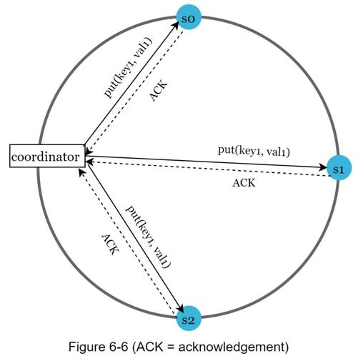

Since data is replicated at multiple nodes, it must be synchronized across replicas. Quorum consensus can guarantee consistency for both read and write operations. Let us establish a few definitions first.
N = The number of replicas
W = A write quorum of size W. For a write operation to be considered as successful, write operation must be acknowledged from W replicas.
R = A read quorum of size R. For a read operation to be considered as successful, read operation must wait for responses from at least R replicas.
Consider the following example shown in Figure 6-6 with N = 3.

W = 1 does not mean data is written on one server. For instance, with the configuration in Figure 6-6, data is replicated at s0, s1, and s2. W = 1 means that the coordinator must receive at least one acknowledgment before the write operation is considered as successful. For instance, if we get an acknowledgment from s1, we no longer need to wait for acknowledgements from s0 and s2. A coordinator acts as a proxy between the client and the nodes.
The configuration of W, R and N is a typical tradeoff between latency and consistency. If W = 1 or R = 1, an operation is returned quickly because a coordinator only needs to wait for a response from any of the replicas. If W or R > 1, the system offers better consistency; however, the query will be slower because the coordinator must wait for the response from the slowest replica.
If W + R > N, strong consistency is guaranteed because there must be at least one overlapping node that has the latest data to ensure consistency.
How to configure N, W, and R to fit our use cases? Here are some of the possible setups:
If R = 1 and W = N, the system is optimized for a fast read.
If W = 1 and R = N, the system is optimized for fast write.
If W + R > N, strong consistency is guaranteed (Usually N = 3, W = R = 2).
If W + R <= N, strong consistency is not guaranteed.
Depending on the requirement, we can tune the values of W, R, N to achieve the desired level of consistency.
Consistency model is other important factor to consider when designing a key-value store. A consistency model defines the degree of data consistency, and a wide spectrum of possible consistency models exist:
•Strong consistency: any read operation returns a value corresponding to the result of the most updated write data item. A client never sees out-of-date data.
•Weak consistency: subsequent read operations may not see the most updated value.
•Eventual consistency: this is a specific form of weak consistency. Given enough time, all updates are propagated, and all replicas are consistent.
Strong consistency is usually achieved by forcing a replica not to accept new reads/writes until every replica has agreed on current write. This approach is not ideal for highly available systems because it could block new operations. Dynamo and Cassandra adopt eventual consistency, which is our recommended consistency model for our key-value store. From concurrent writes, eventual consistency allows inconsistent values to enter the system and force the client to read the values to reconcile. The next section explains how reconciliation works with versioning.